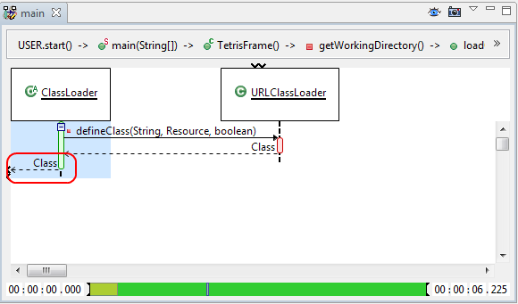
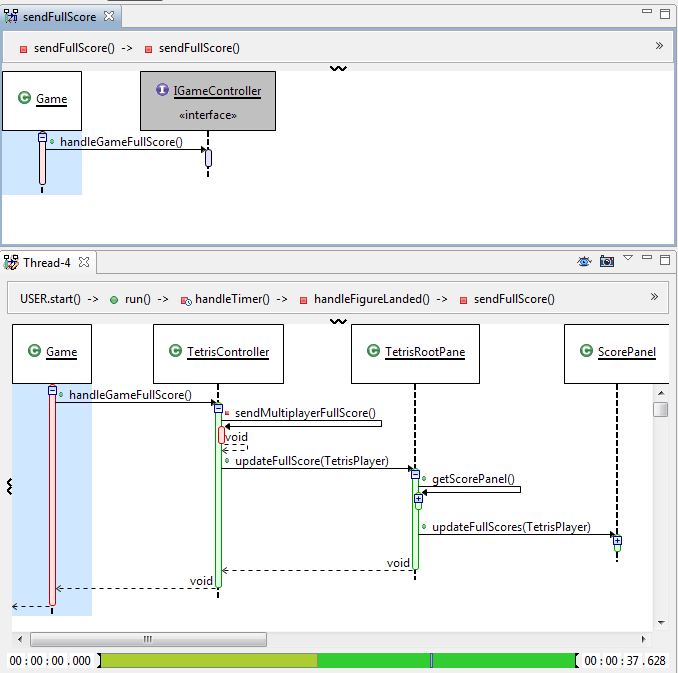
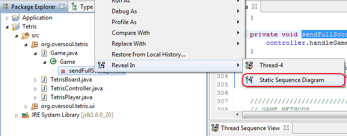

| Return Messages |
Previous versions of Diver did not show any return messages if they came from the root of the chart. Now, you can see what the return message is if you focus in on a specific method call. 
|
| JUnit Traces(Beta) | You can now run your JUnit tests in trace mode. JUnit traces can be found in the Diver "Extras" feature, and will be downloaded if you install from the Marketplace. This feature is relatively untested, so hopefully it will work for you. JUnit is only supported for Java applications. There is no support for Eclipse JUnit launches at this time.
|
| Static Sequence Diagrams (Beta) |
Diver has always offered sequence diagrams that display execution traces of threads. Now it is possible to also view a static sequence diagram that is generated directly from source code. You can then compare the execution of the software with the source code definition. The image below shows the source-code representation of a method to an interface (top). The bottom image shows the execution trace representation, so you can see what implementation class was used at runtime.  The static sequence diagram can be accessed by right-clicking on a method name, and selecting Reveal In > Static Sequence Diagram:  |
| Diver Research | The data collection period for research about Diver has ended. You will no longer be asked to upload any data. |